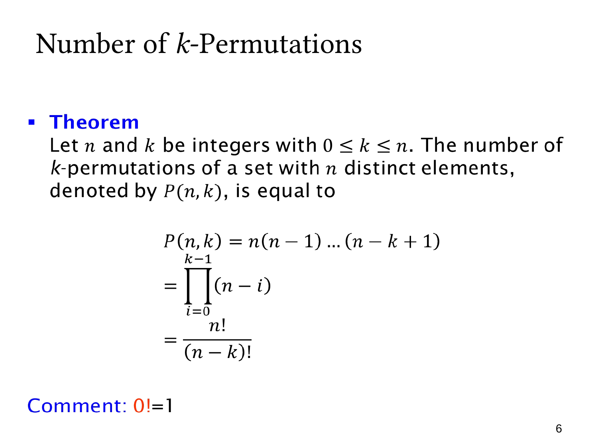

L1.6 · 第 6 页讲解原文
查看这一页课件

k 元排列的计数公式
从 n 个不同元素中选 k 个作有序安排，其数量记作 P(n,k)。在 0≤k≤n 时，
P(n,k)=n(n−1)⋯(n−k+1)=i=0∏k−1(n−i)=(n−k)!n!.
三个写法表达同一个选择过程。第一个位置有 n 个选择；第 j 个位置已有 j−1 个元素用过，所以还有 n−j+1 个选择。填 k 个位置，最后一个因子就是 n−k+1，总共恰好 k 个因子。
乘积符号 ∏ 表示连乘。阶乘形式则利用
n!=n(n−1)⋯(n−k+1)(n−k)!
消去后面的 (n−k)!。例如 P(5,3)=5!/2!=5⋅4⋅3=60。
两个边界值得检查：P(n,n)=n!/0!=n!，表示全排列；P(n,0)=n!/n!=1，表示唯一的空安排。约定 0!=1 让这些表达一致。
公式的前提是对象不同、不允许重复且关心次序。允许重复时每一步的选择数不会按此方式递减。